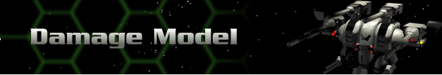
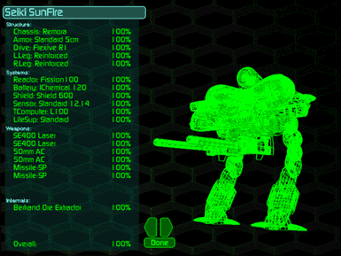

› |
› |
Damage Model |

Click on the small, rotating wireframe image of your Herc at the bottom center of the Battlefield screen to bring up the Damage Model screen. Here, you will be able to determine the vulnerability percentage of any Herc component, view damage, conduct repairs (if you have the appropriate technology), and view configured weapon and device descriptions. When you first enter this area, you will see a list of all components and a larger, rotating wireframe image of the selected Herc. You can control the rotation of this Herc for easier viewing. Click toward the center of the wireframe to slow or stop the rotation. The farther away from the center you click, the faster the rotation. You can also click and drag for continuous control. Control the direction of the rotation by clicking to the left or right of center.
